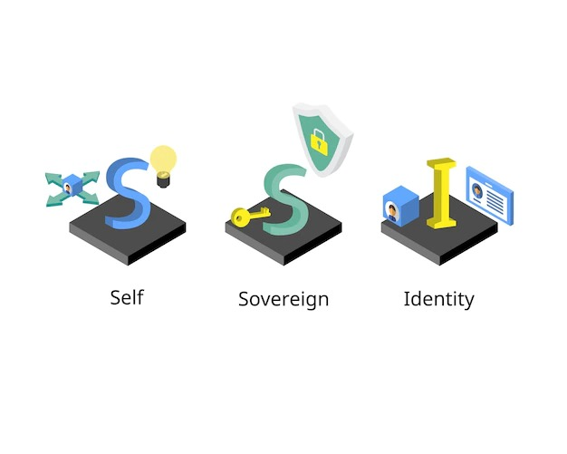

<main class="custom-bg-pink  h-screen">
    <div class="max-w-[85rem] px-4 py-10 sm:px-6 lg:px-8 lg:py-14 mx-auto">
        <!-- Grid -->
        <div class="grid md:grid-cols-2 gap-12">
          <div class="lg:w-3/4">
            <h2 class="text-3xl text-gray-800 font-bold lg:text-4xl">
                Why decentralized identifier for passwordless?
            </h2>
            <!-- <p class="mt-3 text-gray-800">
              We help businesses bring ideas to life in the digital world, by designing and implementing the technology tools that they need to win.
            </p> -->
            <!-- <p class="mt-5 inline-flex items-center gap-x-2 font-medium text-blue-600">
              Contact sales to learn more
              <svg class="w-2.5 h-2.5 transition ease-in-out group-hover:translate-x-1" width="16" height="16" viewBox="0 0 16 16" fill="none" xmlns="http://www.w3.org/2000/svg">
                <path fill-rule="evenodd" clip-rule="evenodd" d="M0.975821 6.92249C0.43689 6.92249 -3.50468e-07 7.34222 -3.27835e-07 7.85999C-3.05203e-07 8.37775 0.43689 8.79749 0.975821 8.79749L12.7694 8.79748L7.60447 13.7596C7.22339 14.1257 7.22339 14.7193 7.60447 15.0854C7.98555 15.4515 8.60341 15.4515 8.98449 15.0854L15.6427 8.68862C16.1191 8.23098 16.1191 7.48899 15.6427 7.03134L8.98449 0.634573C8.60341 0.268455 7.98555 0.268456 7.60447 0.634573C7.22339 1.00069 7.22339 1.59428 7.60447 1.9604L12.7694 6.92248L0.975821 6.92249Z" fill="currentColor"/>
              </svg>
            </p> -->
            <!--  -->
          </div>
          <!-- End Col -->
      
          <div class="space-y-6 lg:space-y-10">
            <!-- Icon Block -->
            <div class="flex">
              <!-- <svg class="flex-shrink-0 mt-2 h-6 w-6 text-gray-800" xmlns="http://www.w3.org/2000/svg" width="16" height="16" fill="currentColor" viewBox="0 0 16 16">
                <path d="M5.5 7a.5.5 0 0 0 0 1h5a.5.5 0 0 0 0-1h-5zM5 9.5a.5.5 0 0 1 .5-.5h5a.5.5 0 0 1 0 1h-5a.5.5 0 0 1-.5-.5zm0 2a.5.5 0 0 1 .5-.5h2a.5.5 0 0 1 0 1h-2a.5.5 0 0 1-.5-.5z"/>
                <path d="M9.5 0H4a2 2 0 0 0-2 2v12a2 2 0 0 0 2 2h8a2 2 0 0 0 2-2V4.5L9.5 0zm0 1v2A1.5 1.5 0 0 0 11 4.5h2V14a1 1 0 0 1-1 1H4a1 1 0 0 1-1-1V2a1 1 0 0 1 1-1h5.5z"/>
              </svg> -->
              
              <div class="ml-5 sm:ml-8">
                <h3 class="text-base sm:text-lg font-semibold text-gray-800">
                    Reduced / No attack surface
                </h3>
                <p class="mt-1 text-gray-600">
                    Although in legacy infrastructure, local passwords will continue to exist for local accounts, they are managed by the machines. Authnull provides a PAM solution with a decentralized identifier enabled to reduce the attack surface as credentials are delegated to the users wallet.
                </p>
              </div>
            </div>
            <!-- End Icon Block -->
      
            <!-- Icon Block -->
            <div class="flex">
              
              <div class="ml-5 sm:ml-8">
                <h3 class="text-base sm:text-lg font-semibold text-gray-800">
                    Fraud proof credentials
                </h3>
                <p class="mt-1 text-gray-600">
                    Issuing organizations can provide fraud-proof credentials and verifying organizations can instantly check the authenticity of credentials.
                </p>
              </div>
            </div>
            <div class="flex">
              
              <div class="ml-5 sm:ml-8">
                <h3 class="text-base sm:text-lg font-semibold text-gray-800">
                    Self Sovereign Identity
                </h3>
                <p class="mt-1 text-gray-600">
                    Helps implement self owned, self managed identity as opposed to management of third parties
                </p>
              </div>
            </div>
            <!-- End Icon Block -->
      
            <!-- Icon Block -->
           
            
            <!-- End Icon Block -->
          </div>
          <!-- End Col -->
        </div>
        <!-- End Grid -->
      </div>
</main>

  <!-- End Icon Blocks -->